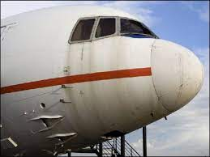

Aviones
Aviones


 Aviones
Aviones
El morro de un avión es la parte delantera de la aeronave, donde se encuentra la cabina de pilotaje y diversos sistemas esenciales. La cabina es el lugar donde los pilotos controlan el avión, monitorean los instrumentos y comunican con el control del tráfico aéreo. Además de ser la "oficina" de los pilotos, el morro alberga sistemas vitales como el sistema de navegación, comunicación y control, así como los controles de vuelo.
El diseño del morro es crucial para garantizar una buena visibilidad para los pilotos durante el despegue, aterrizaje y vuelo. Las ventanas en la cabina permiten a los pilotos observar el entorno y los instrumentos de vuelo. También puede contener sensores y cámaras que asisten en maniobras y aterrizajes precisos, especialmente en condiciones adversas como niebla o lluvia intensa.
redes